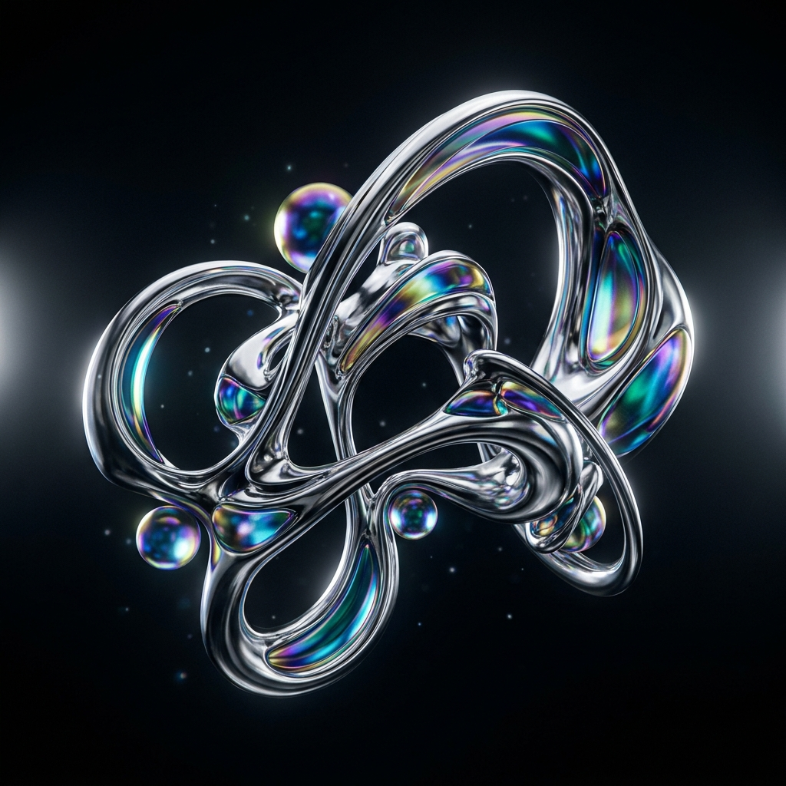

Экспериментальное 3D-исследование жидкого хрома, физического преломления света и органических форм в среде Blender.

Этот проект представляет собой серию концептуальных трехмерных скульптур, созданных для виртуальной галереи цифрового искусства. Главная цель работы заключалась в том, чтобы раздвинуть границы привычного восприятия материалов и показать, как цифровые среды могут имитировать невозможные в реальном мире физические взаимодействия металлов и света.
В центре композиции — органические, текучие формы, напоминающие капли ртути или расплавленный хром, застывший в невесомости. Отражения и преломления света играют здесь ключевую формообразующую роль.
Главной технической и художественной сложностью было создание фотореалистичного материала стекла с эффектом спектральной дисперсии (разделения белого света на RGB-каналы при преломлении). Стандартные шейдеры рендер-движков часто не поддерживают этот эффект из коробки, либо его симуляция требует колоссальных вычислительных мощностей, что критически затягивает процесс рендеринга кадров высокого разрешения.
Для реализации дисперсии мы разработали кастомную группу нод в Blender Cycles. Мы разделили луч света на три спектральные составляющие (красный, зеленый, синий) с помощью трех независимых стеклянных шейдеров с немного отличающимися показателями преломления (IOR), а затем объединили их обратно с помощью ноды Add Shader.
Это позволило получить потрясающе красивую и физически точную радужную кайму на гранях стеклянных элементов с минимальным влиянием на скорость просчета сцены. Для освещения была использована комбинированная схема: мягкая студийная HDRI-карта и точечные направленные источники неоновых цветов (зеленый и оранжевый) для создания агрессивных контрастных бликов.